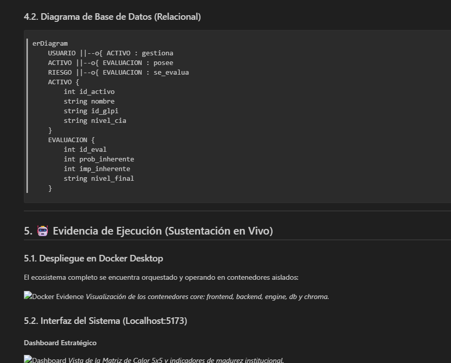
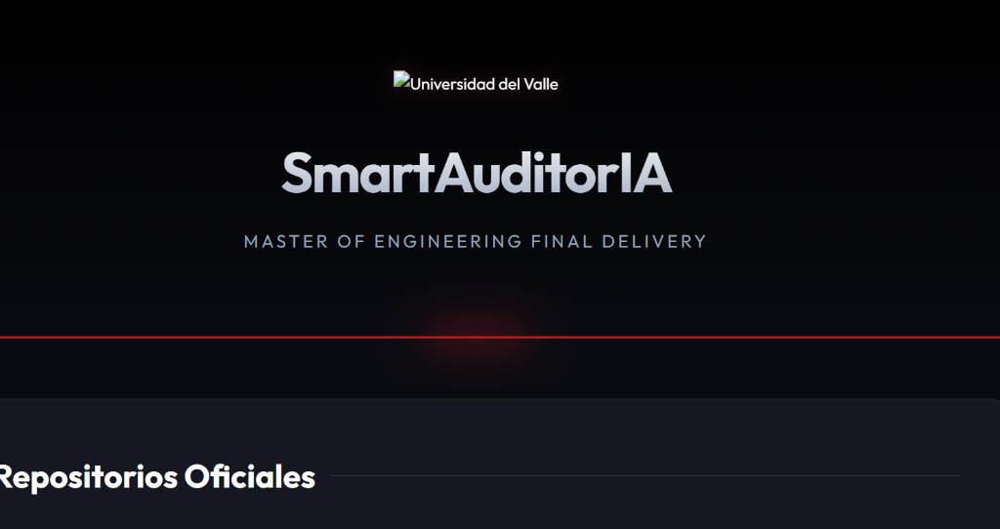
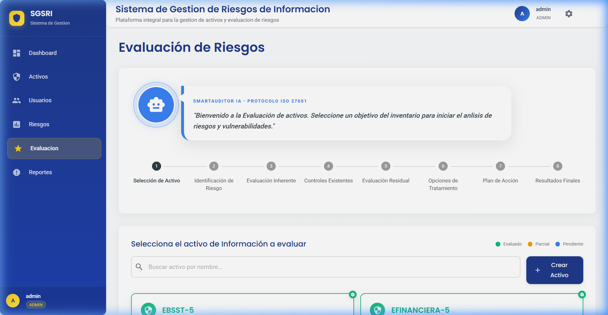
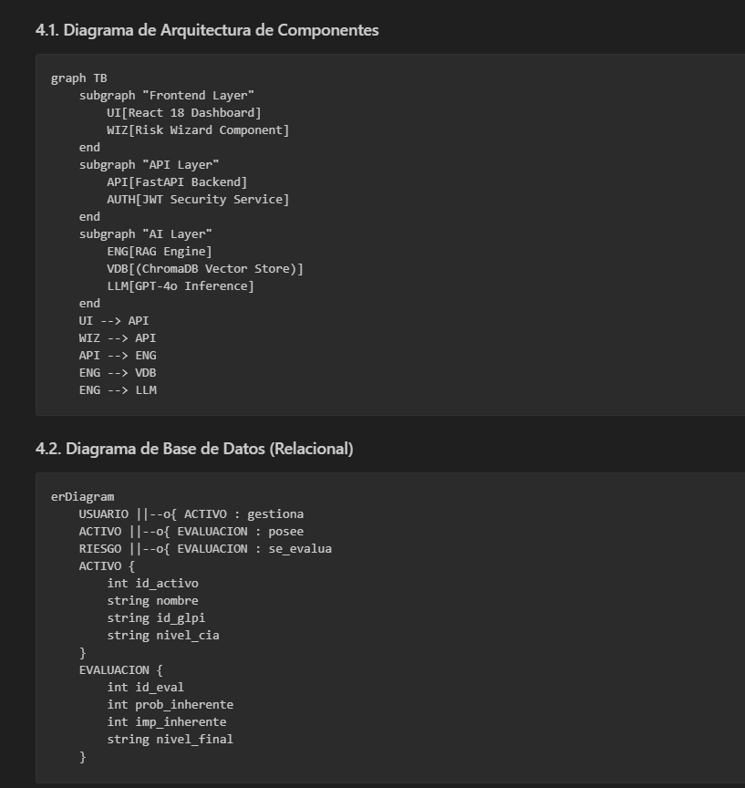
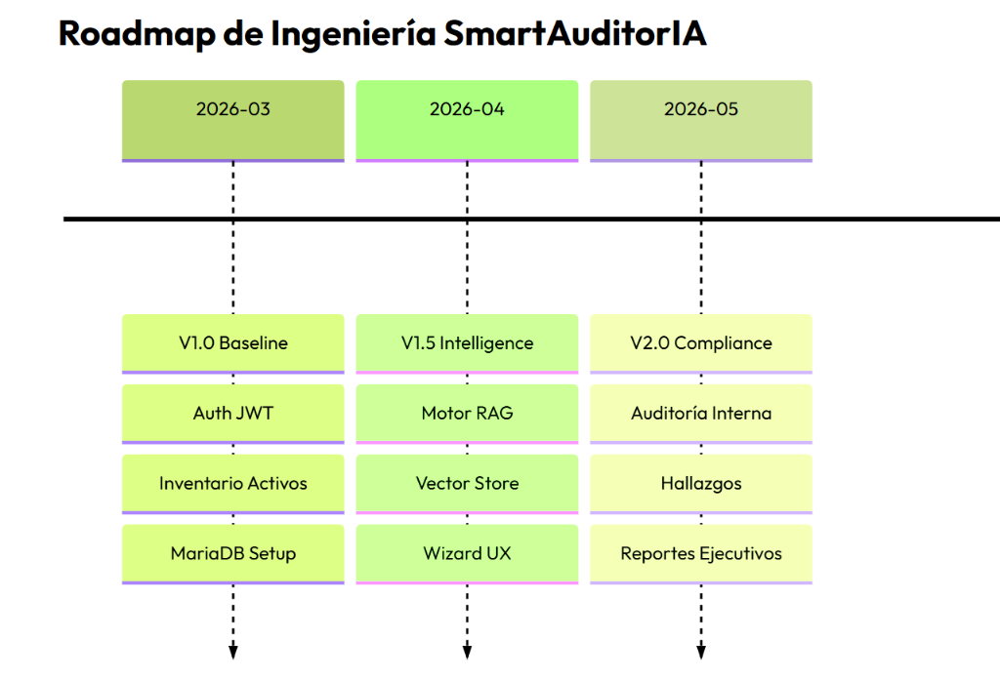
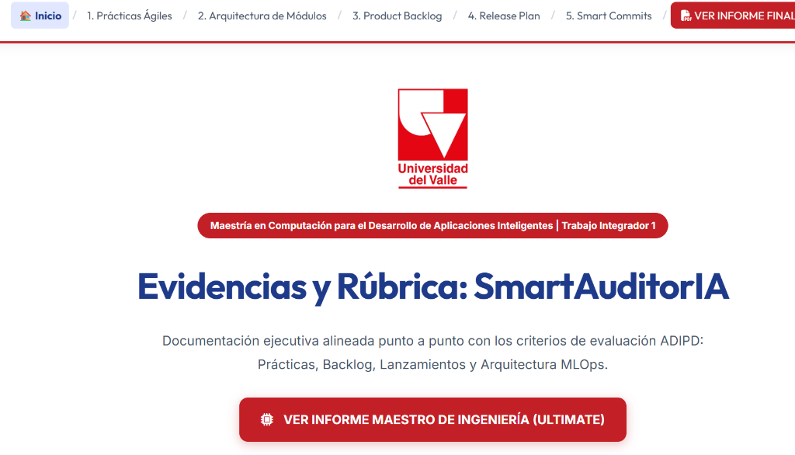

SmartAuditorIA
Informe Final de Ingeniería - Trabajo Integrador
Informe Final de Ingeniería - Trabajo Integrador
SmartAuditorIA es una solución de ingeniería avanzada diseñada para automatizar y optimizar la gestión de riesgos de seguridad de la información bajo el estándar ISO/IEC 27001. El sistema integra un motor de inteligencia artificial (RAG - Retrieval Augmented Generation) para proporcionar recomendaciones normativas precisas, eliminando la ambigüedad en la identificación de controles mitigantes.
El desarrollo se estructuró en 5 épicas estratégicas que cubren desde la infraestructura base hasta la generación de reportes de cumplimiento final. A continuación se detallan las 10 Historias de Usuario críticas del MVP.
| Épica | ID Ticket | Historia de Usuario | SP | Estado |
|---|---|---|---|---|
| EP1: Infra & Config | SCRUM-10 | Orquestación Docker Multirepositorio | 8 | DONE |
| EP2: Assets & Auth | SCRUM-12 | Modelado BD MariaDB Activos CIA | 5 | DONE |
| EP2: Assets & Auth | SCRUM-26 | Seguridad JWT y Roles RBAC | 8 | DONE |
| EP2: Assets & Auth | SCRUM-15 | Endpoints de Gestión de Evaluación | 5 | DONE |
| EP3: AI Engine | SCRUM-29 | Motor RAG con Target Isolation ISO | 5 | DONE |
| EP3: AI Engine | SCRUM-30 | Trazabilidad Forense de Respuestas | 5 | DONE |
| EP3: AI Engine | SCRUM-31 | Heurística de Mitigación Fallback | 3 | DONE |
| EP4: Hardening UX | SCRUM-14 | Dashboard de Matriz de Calor 5x5 | 5 | DONE |
| EP4: Hardening UX | HU-WIZARD | Wizard Paso a Paso Guiado por IA | 8 | DONE |
| EP5: Compliance | SCRUM-35 | Despliegue Local de Validación (Shadow) | 5 | DONE |
Las siguientes capturas demuestran el cumplimiento de las interfaces de prueba validadas en el despliegue local.






El sistema implementa un proceso de extracción desde el inventario técnico (GLPI) hacia el repositorio de activos de seguridad:
La evaluación del riesgo se calcula mediante la interacción de la probabilidad técnica y el impacto en la tríada de seguridad (CIA) del activo específico: